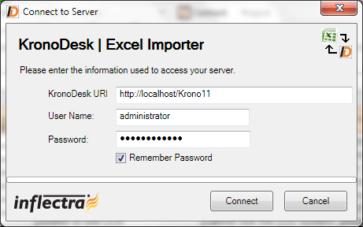

Importing from Microsoft Excel
The web-based interface of KronoDesk® is ideal for managing your company's support desk. However when first standing up the system, you may have legacy help desk tickets already in another system or in an Microsoft Office document (e.g. Excel), it is useful to be able to load in a batch of such legacy help desk tickets, rather than having to manually enter them one at a time.
To simplify this task, KronoDesk® comes with a Microsoft Excel Add-In that can export help desk tickets from a populated Excel sheet into KronoDesk®.
Installing the Microsoft Excel Add-In
The first thing you need to do is to go to the KronoDesk "Add-Ons and Downloads" page of the Inflectra Website (it can be found in the KronoDesk section), and download the MS-Office Add-Ins installation package:
MS-Office 2010 Add-Ins -- these are compatible with Microsoft Office 2010 and 2013. They can connect to KronoDesk v1.1 or later. They also require Microsoft .NET 4.0.
This installation package will install the add-ins for Microsoft Excel onto your local PC You can connect to either a cloud-hosted or on-premise version of KronoDesk. If you don't have the correct version of Microsoft .NET installed or some of the necessary prerequisites, you will be given the opportunity to install them when you first run the installation package.
Once you have the Excel Add-In installed, the second thing you'll need to download is the KronoDeskImportTemplate Excel Sheet. This spreadsheet contains the necessary pre-formatted columns that are needed for the Add-In to easily recognize the data and know how to handle it.
Once you have downloaded the template, please double-click on it to open it up in MS-Excel. You will notice that there is an additional ribbon entry under the "Add-Ins" tab in Excel which is used for importing/exporting data to/from KronoDesk:

This ribbon allow you to connect to KronoDesk, and perform the import/export. The process for using this toolbar is described below:
Connecting to KronoDesk®
The first thing you need to do is to click on the [Connect] button to specify the information used to connect to your instance of KronoDesk:

Please enter the following information into the dialog box:
-
KronoDesk URL: Please enter the web address that you use to access KronoDesk® in your browser. This is usually of the form http://hostname/KronoDesk or https://mycompany.kronodesk.net. Make sure that you remove any suffixes from the address (e.g. Default.aspx).
-
User Name: Please enter the username that you use for logging in to KronoDesk
-
Password: Please enter the password that you use for logging in to KronoDesk
-
Remember Password: If you are using this Add-In on a private computer, you can check this option to have the system remember your credentials locally. Please do not use this option on a public computer and it will compromise the security of your KronoDesk installation.
Once you have entered the necessary information, please click [Connect] to authenticate with the server. If the login information is invalid, you will see an error message appear, otherwise you will be connected and the list of projects and artifacts will be populated. If you want to end your session, you should just click the [Disconnect] button and the Add-In will close your connection.
Choosing the Artifact Type
Once you have successfully connected to KronoDesk, you should now choose the appropriate Artifact in the system that you will be importing / exporting (currently only Tickets are supported):

The artifact choice will match the name of the Excel sheet in the template, so if you are going to be exporting Tickets, you should choose "Tickets" from the dropdown list and then click on the "Tickets" tab inside the Excel import template.
Once you have selected the artifact, there are three buttons that you can now use:
-
Export: Clicking this button will take the data in the spreadsheet and use it to add/update items in KronoDesk.
-
Import: Clicking this button will retrieve the data from the KronoDesk server and use that to populate the spreadsheet. [This is currently not available in the Add-In]
-
Clear: This button allows you to quickly clear the data in the import template while leaving all the necessary headings and other information that the Add-In needs to be able to import/export data.
-
Options: This button allows you to change some of the import/export options.
Exporting Data
The Excel Add-In is capable of exporting help desk ticket data from the Excel template to KronoDesk.
Configuring the Lookups
The Excel template contains a special 'Lookups' sheet in the Excel workbook. Before actually performing the export, you should review this sheet to make sure the list of products, statuses, priorities and resolutions match your instance of KronoDesk:

Normally you would need to change at least the list of Products (since it will have the three sample products by default) and depending on how you have customized your instance, you will also need to adjust the statuses, priorities and resolutions (currently Type is not used and can be ignored).
To get the appropriate list of products, statuses, priorities and resolutions, go to the Administration section of KronoDesk and display the appropriate screens. For example, for products:

Make sure that the products, statuses, priorities and resolutions in the Excel workbook match the ID and the value displayed in KronoDesk. Once that has been done, you are now ready to export your data.
Exporting Tickets
To export tickets, first you need to click on the "Tickets" sheet in the Excel workbook:
Next you should click on the [Clear] icon to first remove the sample information from the spreadsheet. Once you have the sheet ready for export, you need to either enter the tickets into this specially formatted spreadsheet or cut and paste them in from another existing Excel sheet that you've been using to manage tickets previously (or from the output of another tool). Then click [Export] and the new items will be added to your instance of KronoDesk.
The various columns that can be imported/exported, and the rules for entering data are listed below:
| Tkt # | Stores the ID of the ticket. Should be left blank for new items being added to KronoDesk |
| Ticket Subject | The subject / name of the help desk ticket. |
| Ticket Description | The long description of the ticket. If you want it formatted, you need to add HTML tags such as <b> for bold |
| Product | The name of the KronoDesk product that you want to associate the ticket with. It needs to be one of the values from the dropdown list. |
| Status | The status of the ticket. It needs to be one of the values from the dropdown list. |
| Priority | The priority of the ticket. It needs to be one of the values from the dropdown list. |
| Resolution | The resolution of the ticket. It needs to be one of the values from the dropdown list. |
| Opener | The user that opened the ticket. Needs to be the ID of the user (e.g. user US00005 would be entered as just 5). If left blank, it will default to the user logged in through the Add-In. |
| Assignee | The internal user that the ticket should be assigned to Needs to be the ID of the user (e.g. user US00005 would be entered as just 5) |
| Creation Date | The date that the ticket was logged. If this field is not populated, the current date is used instead |
| Closed Date | The date that the ticket was closed. Do not enter a value in this field if the ticket is not in a closed status. |
| Comment | The description of a comment/note that should be appended to the ticket. If you want it formatted, you need to add HTML tags such as <b> for bold. Note that this field always appends, so if you want to add two comments, just enter the first value and click [Export], then replace it with the second value and click [Export] |
Note: the columns that are required are listed in bold type.
Changing the Import/Export Options
You can change how the import/export works by clicking on the Options icon. This brings up the Options dialog box:

When you import artifacts from KronoDesk into MS-Excel, if they have a formatted description, by default all the HTML tags that are used to describe the formatting will be loaded into the Excel cell. This is useful if you plan on making changes and then updating KronoDesk (since it will preserve the formatting).
However if you want to be able to more easily read the descriptions in Excel and do not plan on updating KronoDesk, you can select the option to Remove the Formatting, which will convert the descriptions to plain-text before loading them into Excel.